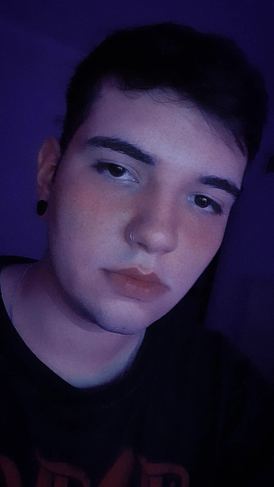

<div class="wall">
    <div class="row">
        <div class="col-xs-12 col-sm-2 col-md-2 col-lg-2">
            
        </div>
<div id="info">
        <div class="col-xs-12 col-sm-2 col-md-2 col-lg-2" id="name">
            <p id="nombre">Gianluca Curras</p>
            <p>Full Stack Developer Jr</p>
        </div>
    <div class="col-xs-12 col-sm-8 col-md-8 col-lg-8" id="acerca">
        <span>
            <h2>Acerca de Mí</h2>
            <p>
                Tengo 20 años soy de Monte Grande (Zona Sur).<br>Desde que soy pequeño me apasiona de la tecnologia, pero no fue hace poco tiempo que descubri el mundo del desarrollo de lo que trata y de que cualquiera podia aprender, eso me animo a programar por mi cuenta y aprender lenguajes de programación.<br> luego descubri ArgentinaPrograma y me parecio un buen proyecto para quienes queremos meternos un poco mas de lleno en el tema o saber si realmente nos gusta y tener algo que avale nuestros conocimientos sin necesidad de una carrera de grado.<br>Igualmente planeo continuar la carrera de Ingenieria en Sistemas y ejercer para poder vivir de lo que me gusta.
            </p>
        </span>
    </div>
</div>
    </div>
</div>
